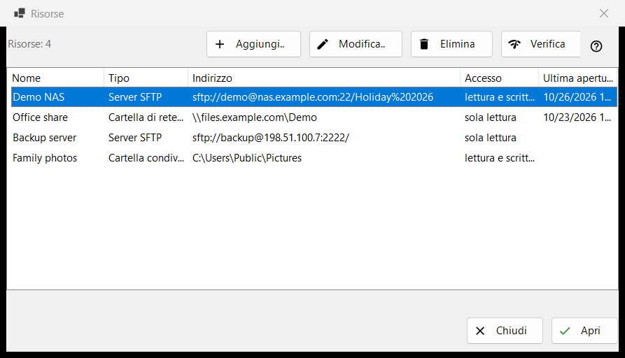
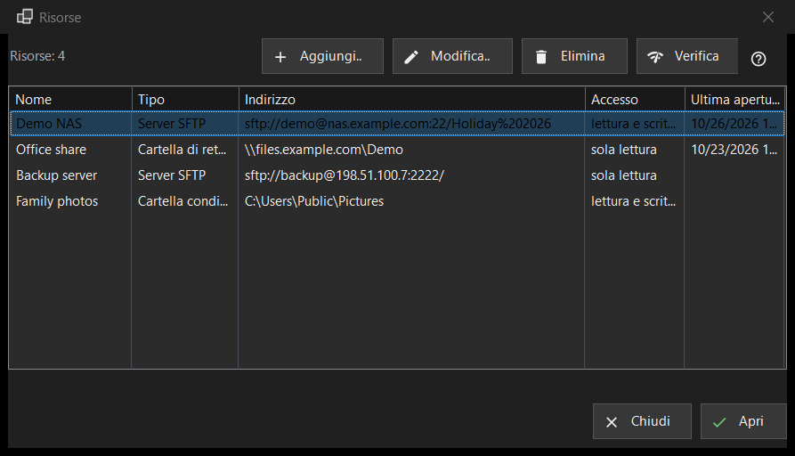

Risorse
Scopo
L'elenco dei server e delle cartelle di rete che il programma può aprire: server SFTP, cartelle di rete di Windows (SMB) e cartelle che Share Manager condivide da questo computer. Si apre da «Gestisci risorse..» nel menu delle cartelle; lo stesso elenco si trova nella pagina «Server e risorse» della finestra Impostazioni.


In questo ordine
- Premi «Aggiungi..» e compila i dati del server, oppure porta dentro un file di impostazioni con il pulsante «Altro».
- Seleziona la nuova riga e premi «Verifica».
- Premi «Apri» o fai doppio clic sulla riga: il programma si connette e mostra la cartella del server.
- Usa «Modifica..» per cambiare un indirizzo o una password e «Elimina» per dimenticare una risorsa.
Gli elementi
L'elenco
Colonne: Nome, Tipo, Indirizzo, Accesso e Ultima apertura. Il tipo è «Server SFTP», «Cartella di rete (SMB)» o «Cartella condivisa (Share Manager)»; l'accesso indica «Sola lettura» o «Lettura e scrittura». Una riga sotto l'elenco conta le risorse e, quando non ce ne sono, la finestra mostra un suggerimento e un pulsante «Aggiungi..». Modifica, Elimina e Verifica (e Apri nella riga inferiore della finestra Risorse) richiedono una riga selezionata; finché non c'è, il loro suggerimento dice «Selezionare prima una risorsa nell'elenco».
Aggiungi.. e Modifica..
«Aggiungi..» apre il modulo di una nuova risorsa e «Modifica..» quello della risorsa selezionata. Una password digitata lì viene salvata cifrata per il tuo account Windows, mai nell'elenco stesso.
Elimina
«Elimina» chiede prima conferma e la risposta predefinita è No. La domanda nomina la risorsa e dice che anche la password salvata per essa viene rimossa, mentre i file sul server non sono toccati.
Verifica
«Verifica» controlla la riga selezionata senza aprirla. Per un server SFTP prova tutti gli indirizzi noti della risorsa e riporta ciascuno come host:porta con un esito: una risposta SSH viva rende la verifica riuscita, una porta aperta che non è SSH è un avviso, il silenzio è un fallimento. Non viene inviata nessuna password. Per una cartella di rete apre la condivisione con la password salvata e legge la sua cartella principale; se non c'è una password salvata, ti chiede di inserirla con «Modifica..». Per una riga di Share Manager controlla soltanto se la cartella esiste su questo computer.
Apri
«Apri», o un doppio clic su una riga, consegna la risorsa al programma, che si connette e mostra la sua cartella. Se non c'è una password salvata, o quella salvata viene rifiutata, prima compare una piccola finestra che la chiede.